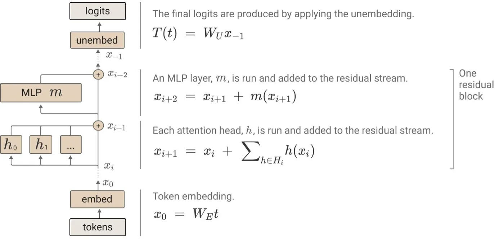
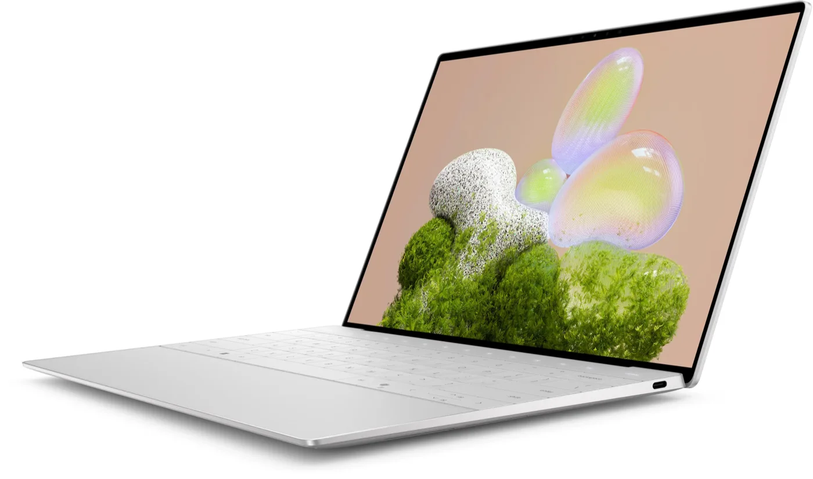
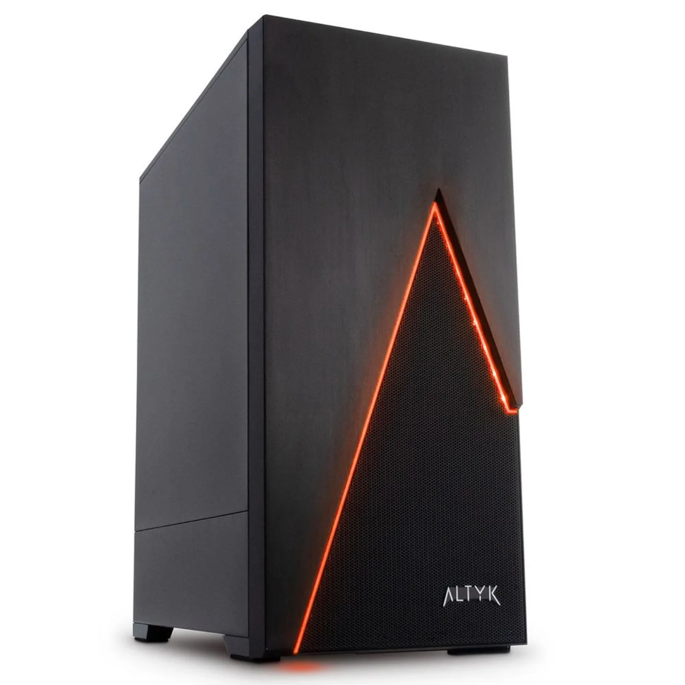
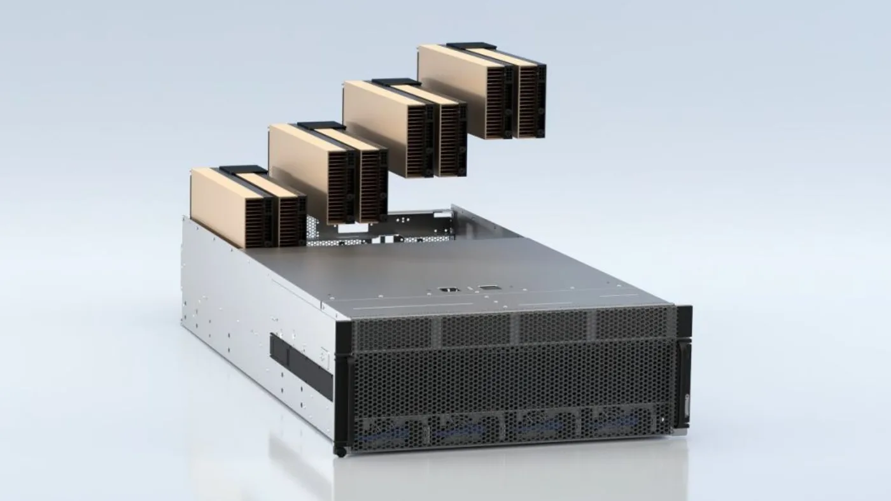
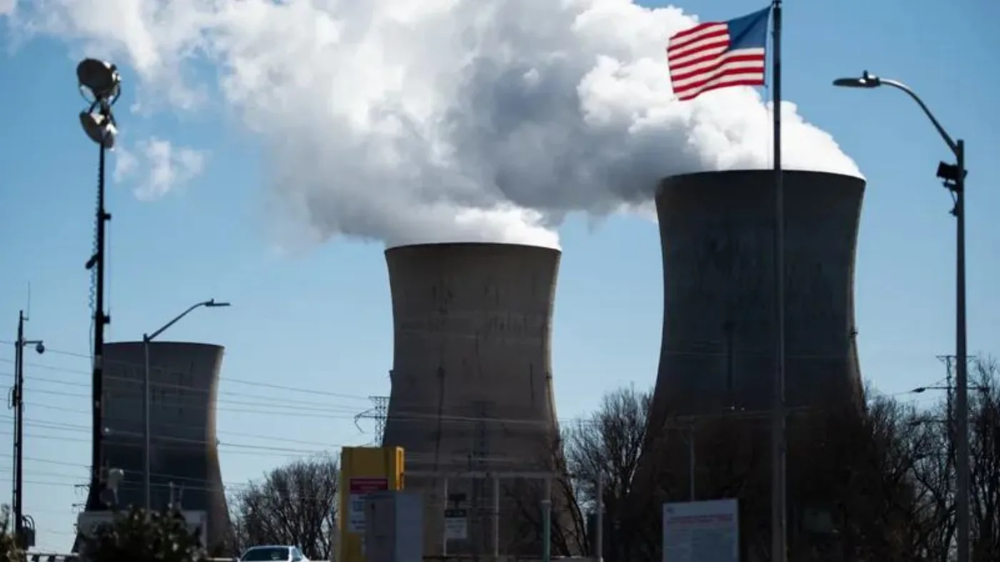
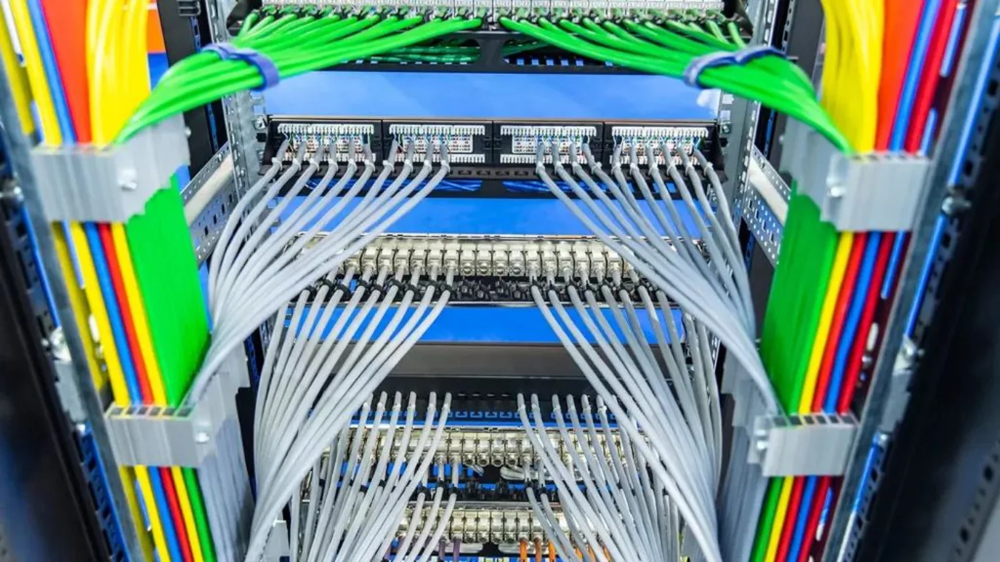
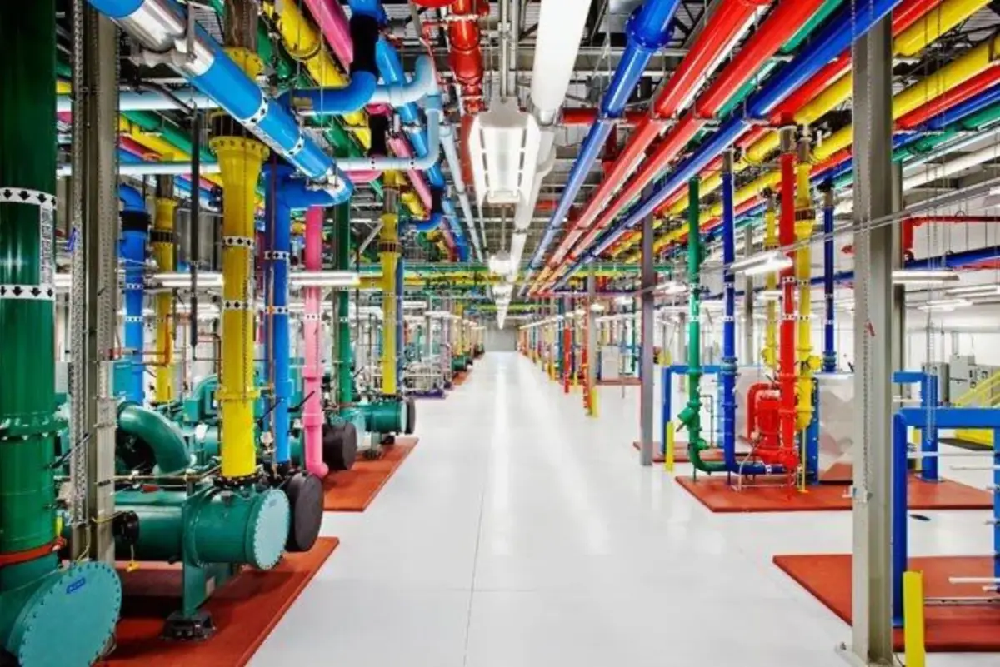

Support 5 sur 7
Le poids physique de l'IA
Des machines, un bâtiment, de l'électricité, de l'eau, des métaux.
Machines et énergie
Un impact invisible
Rien à l'écran ne dit ce qu'une réponse a coûté.
Pour l'utilisateur, le calcul reste invisible : l'électricité est consommée à distance, dans un centre de données.
C'est ce que cet atelier rend visible.
Machines et énergie
À chaque question, des calculs
Générer du texte, pour un ordinateur, c'est enchaîner des multiplications de tableaux de chiffres, des milliers de fois par réponse.
N'essayez pas de les faire de tête.

Schéma tiré de « A Mathematical Framework for Transformer Circuits », Anthropic, 2021.
Machines et énergie
Gros modèle, grosse machine
Ce qui compte, c'est la mémoire qu'il faut pour charger les paramètres.
- Un smartphone : jusqu'à 3 Go.
- Un ordinateur portable : jusqu'à 16 Go, pour un petit modèle.

Seuils affichés par compar:IA dans la fiche « Matériel nécessaire » de chaque modèle.
Machines et énergie
Au-delà, des cartes graphiques
Une tour

Une carte graphique, jusqu'à 80 Go, pour un modèle moyen.
Un serveur

Plusieurs cartes, au-delà de 80 Go, pour un grand modèle.
Seuils affichés par compar:IA, fiche « Matériel nécessaire », à 80 Go par carte graphique.
Machines et énergie
Ce que consomme un centre
Un centre orienté IA consomme autant d'électricité que :
100 000 ménages
Les plus grands, en construction aujourd'hui, en consommeront 20 fois plus, soit deux millions de ménages.
Agence internationale de l'énergie, « Energy and AI », avril 2025. Le rapport parle d'un centre « type », pas d'un centre quelconque.
Machines et énergie
Rallumer une centrale nucléaire
835 MW
de puissance à Three Mile Island. Microsoft en achètera la production pendant 20 ans, pour ses centres de données.

La centrale n'a pas été vendue, et le réacteur n'a pas redémarré : Constellation vise 2027, sous réserve des autorisations de la NRC.
Constellation Energy, communiqué du 20 septembre 2024 et résultats du 2e trimestre 2025. Nuclear Regulatory Commission, « Christopher M. Crane Clean Energy Center », état des procédures de redémarrage.
Le matériel
Et des matières premières
L'essor de l'IA fera passer la part des centres de données dans la demande annuelle de cuivre :
| Aujourd'hui | D'ici 2050 |
|---|---|
| moins de 1 % | 6 à 7 % |

Pourcentages donnés au Financial Times par la directrice financière de BHP, septembre 2024.
Le matériel
Une demande en concurrence
En tonnes : de 0,5 à 3 millions par an, la production cumulée des quatre plus grandes mines du monde.
D'autres secteurs, notamment l'électrification des transports et de l'industrie, utilisent le même métal.
BHP est le premier minier mondial, et il vend du cuivre.
BHP Insights, « Why AI tools and data centres are driving copper demand », janvier 2025.
Le matériel
Le numérique français, en trois
- Terminaux50 %
- Centres de données46 %
- Réseaux4 %
Les écrans, les téléphones et les ordinateurs pèsent autant que tous les centres de données réunis. Le sujet ne se joue pas seulement dans les serveurs.
ADEME et Arcep, Évaluation de l'impact environnemental du numérique en France, rapport final, janvier 2025. Répartition de l'empreinte carbone du numérique français.
Le matériel
Fabriquer pèse plus que faire tourner
Tout le numérique français
Les seuls terminaux
Pour un appareil, l'essentiel est dépensé avant le premier allumage. Le garder deux ans de plus améliore son bilan de moitié.
ADEME et Arcep, janvier 2025, pour les deux répartitions. ADEME, La face cachée du numérique, 2021, pour la durée d'usage : passer de deux à quatre ans améliore le bilan d'environ 50 %.
L'eau
Prélever n'est pas consommer
Les deux mots sont souvent confondus. Les chiffres les plus spectaculaires portent le plus souvent sur des prélèvements.
L'eau
L'ordre de grandeur, en France
6,5 millions de m³
d'eau en 2024 pour les centres de données français, tous usages confondus, pas seulement l'IA : 575 000 m³ prélevés sur place, le reste pour produire leur électricité.
Soit la consommation annuelle moyenne d'un peu plus de 100 000 personnes, sur 68 millions d'habitants.
Arcep, enquête « Pour un numérique soutenable », édition 2026, données 2024. Estimation de l'Arcep : l'eau prélevée par les centres (575 000 m³, en baisse de 15 %) plus l'eau consommée pour produire leur électricité. Ce total progresse d'environ 8 % en un an.
L'eau
Le sujet est local
À l'échelle d'un pays, le chiffre est limité.
À l'échelle d'une commune déjà en tension sur l'eau, un centre peut contribuer à un conflit d'usage.
La moyenne nationale ne suffit donc pas à décrire les effets locaux.
Arcep et PEReN, mai 2026, qui citent les oppositions aux Pays-Bas et l'effet du changement climatique sur le cycle de l'eau. Dessin de principe : les tailles ne sont pas mesurées.
L'eau
Moins d'électricité, plus d'eau
Les deux ressources tirent souvent en sens inverse.
Refroidir par évaporation
Moins d'électricité, surtout par temps chaud. L'eau évaporée est consommée.
Refroidir à l'air, sans eau
Pas d'eau consommée sur place, davantage d'électricité.
Arcep, enquête « Pour un numérique soutenable », édition 2026 : près de 20 % des centres étudiés refroidissent avec un système qui consomme de l'eau, et un quart de ceux mis en service depuis moins de quatre ans.
L'eau
La bouteille d'eau par message
Vous entendrez ce chiffre dans la salle.
Google mesure 0,26 mL par requête médiane, Mistral AI 45 mL en comptant l'eau dépensée en amont.
Le chiffre ne dit rien sans son périmètre.
Google : Elsworth et coll., août 2025, eau de refroidissement seule. Mistral AI : analyse de cycle de vie, juillet 2025. Messages : 500 mL divisés par chacun des deux chiffres.
Le carbone
Le même kWh, pas le même carbone
Grammes de CO₂ par kilowattheure, sur tout le cycle de vie.
- Monde458 g
- États-Unis384 g
- Irlande257 g
- France41 g
Our World in Data, repris dans la table des mix électriques d'EcoLogits 0.10.2. Pour la France en 2025, RTE publie 19,6 g en ne comptant que la combustion et 29 g sur le cycle de vie : le périmètre change le chiffre.
Le carbone
La localisation compte
Les fournisseurs répartissent leurs centres de données entre plusieurs régions, sans toujours indiquer laquelle traite une requête.
À consommation égale, les émissions dépendent du mix électrique de cette région.

Le carbone
Un mix électrique bas carbone
En France, l'électricité est majoritairement produite par le nucléaire et les renouvelables.
À consommation égale, un serveur situé en France est associé à moins d'émissions que dans un pays au mix plus carboné.
Mais la place sur le réseau n'est pas illimitée : les raccordements de centres de données entrent en concurrence avec l'électrification des transports et de l'industrie.
Intensité carbone : table des mix électriques d'EcoLogits 0.10.2. Raccordements : consultation de RTE citée par l'Arcep, mai 2026.
À retenir
Ce qu'il faut retenir
- Une réponse mobilise une machine réelle, dans un bâtiment réel, branché à un réseau réel.
- Les techniques de refroidissement impliquent un arbitrage entre eau et électricité.
- À l'échelle d'un pays, les volumes sont modestes. À l'échelle d'une commune, ils peuvent ne pas l'être.
- Le bilan de compar:IA donne de l'énergie, pas du carbone : le même kWh pèse plus ou moins lourd selon le pays qui le produit.